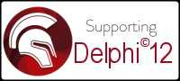
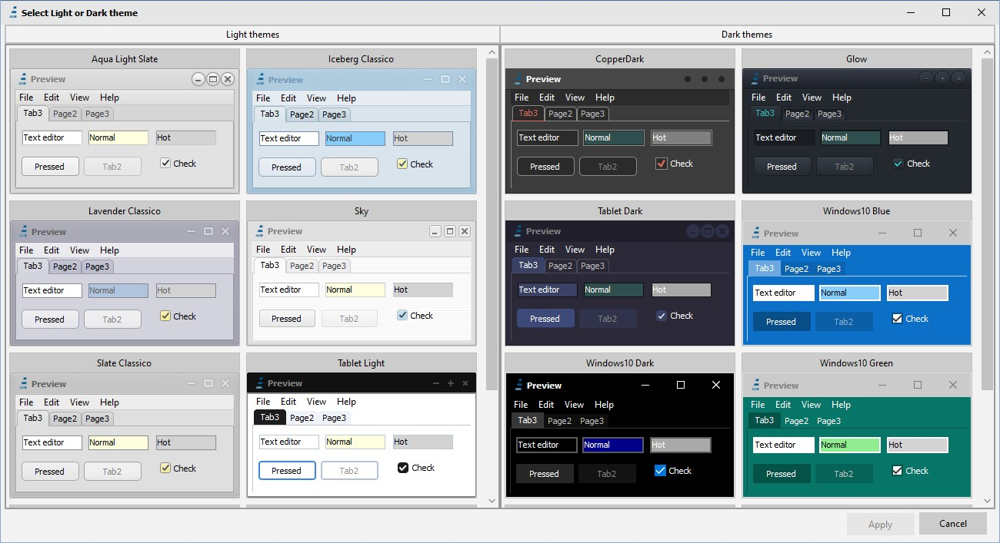
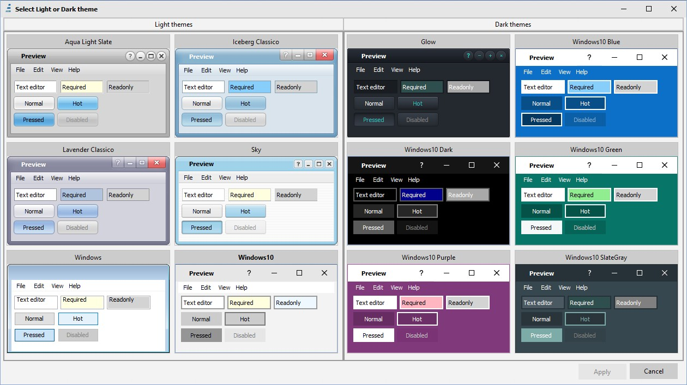
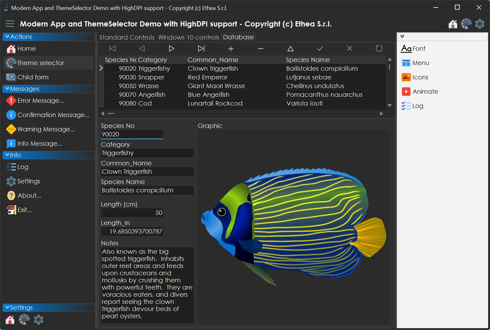
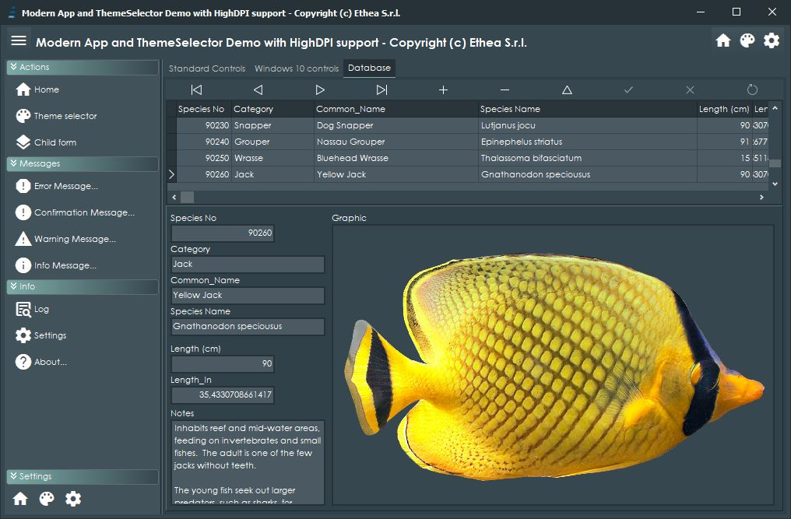
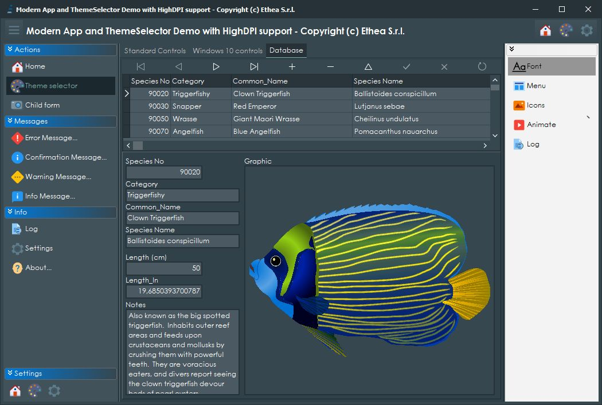
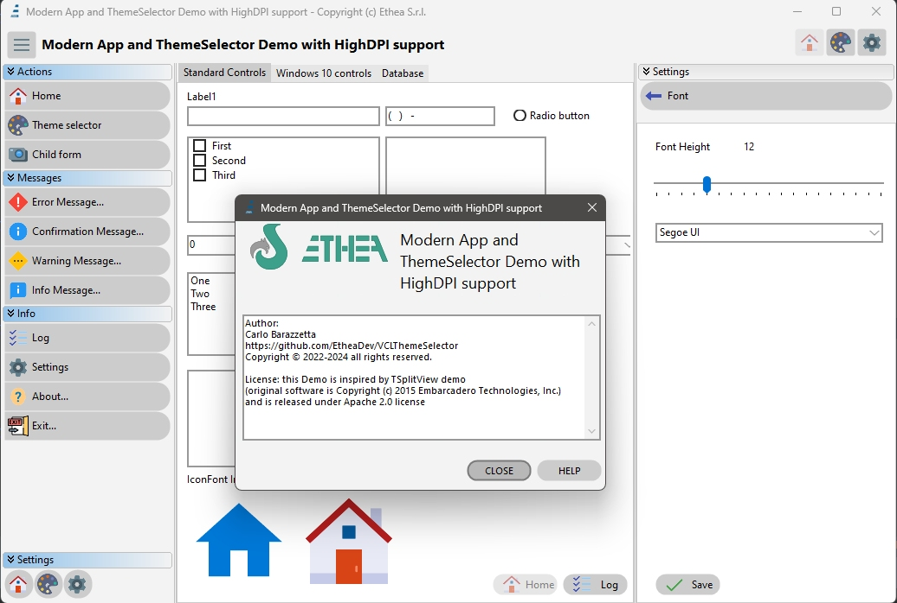

Easy and elegant preview/selection of Theme (Light or Dark) for VCL apps plus HighDPI demo

Related links: https://www.embarcadero.com/ - https://learndelphi.org/
With VCLThemeSelector you can easily add a modern and elegant Theme selector for your Delphi VCL app. The Form shows all the VCL Styles included in your application, then arrange them in defined Rows and Columns. You can specify to include or not 'Windows' not-styled option.


Use the VCLThemeSelectorLauncher demo present in Demo Folder to test it, and see how it's easy to use it, like in this example:
var
LStyleName: string;
LExcludeWindows: boolean;
LMaxRows, LMaxCols: Integer;
begin
LStyleName := TStyleManager.ActiveStyle.Name;
LExcludeWindows := False;
LMaxRows := 3;
LMaxCols := 4;
if ShowVCLThemeSelector(LStyleName, LExcludeWindows, LMaxRows, LMaxCols) then
TStyleManager.SetStyle(LStyleName);
end;
License: the CBVCLStylePreview is based on VCLStylePreview (Vcl.Styles.Ext) from: github.com/RRUZ/vcl-styles-utils with full High-DPI support, and released under Apache 2.0 license.
Also included in this repository you can find a full example of an HighDPI - VCL Themed enabled application that uses the VCLThemeSelector to change the Theme. You can run the demo from: Demo\Bin\ModernAppDemo.exe.




WARNING: to edit and compile the demo you must first download: IconFontsImageList free components here… and SVGIconImageList free components here…
You can also use StyledComponents, enabling STYLEDCOMPONENTS Compiler directive in the Demo. You must first download StyledComponents here…

this Demo is inspired by TSplitView demo (original software is Copyright (c) 2015 Embarcadero Technologies, Inc.) and is released under Apache 2.0 license.
VCLThemeSelector and VCLThemeSelectorLauncher are compatible from Delphi XE5 to Delphi 13, with some differences to High-DPI support.
ModernAppDemo is compatible with Delphi Delphi 13, 12, 11, 10.4, 10.3, 10.2 and 10.1 (notice: 10.1 png stream format of pictures inside biolife.xml are incompatible: use an old biolife.xml file).
15 Oct 2026 - version 3.6.0
28 Apr 2026 - version 3.5.0
21 Aug 2025 - version 3.4.0
20 Nov 2024 - version 3.3.0
26 Apr 2024 - version 3.2.0
20 Oct 2023 - version 3.1.1
04 Mar 2023 - version 3.1.0
15 Sep 2022 - version 3.0.2
10 Apr 2022 - version 3.0.1
16 Feb 2022 - version 3.0.0
19 Oct 2021 - version 2.1.1
16 Oct 2021 - version 2.1.0
23 Aug 2021 - version 2.0.2
24 Jan 2021 - version 2.0.1
30 Aug 2020 - version 2.0.0
19 Jun 2020 - version 1.1.2
11 Jun 2020 - version 1.1.1
09 Jun 2020 - version 1.1.0
17 May 2020 - version 1.0.2
27 Apr 2020 - version 1.0.1
25 Apr 2020 - version 1.0.0